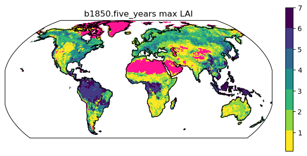
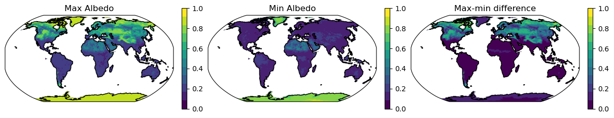
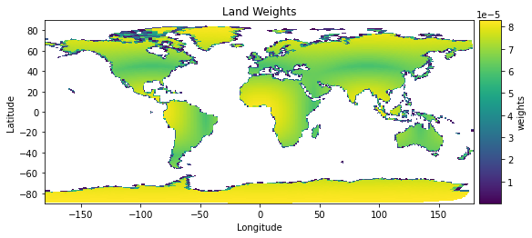
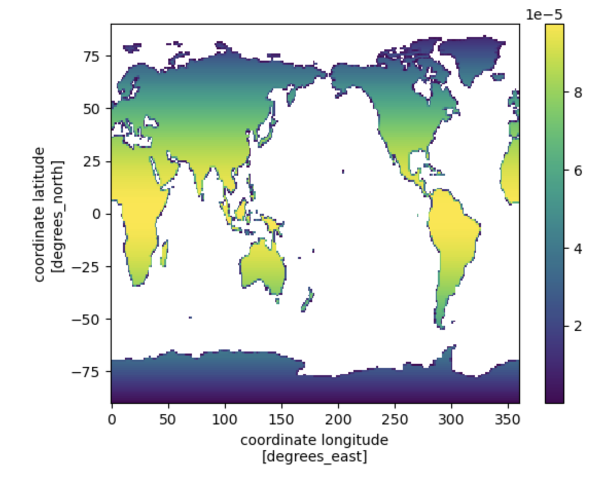
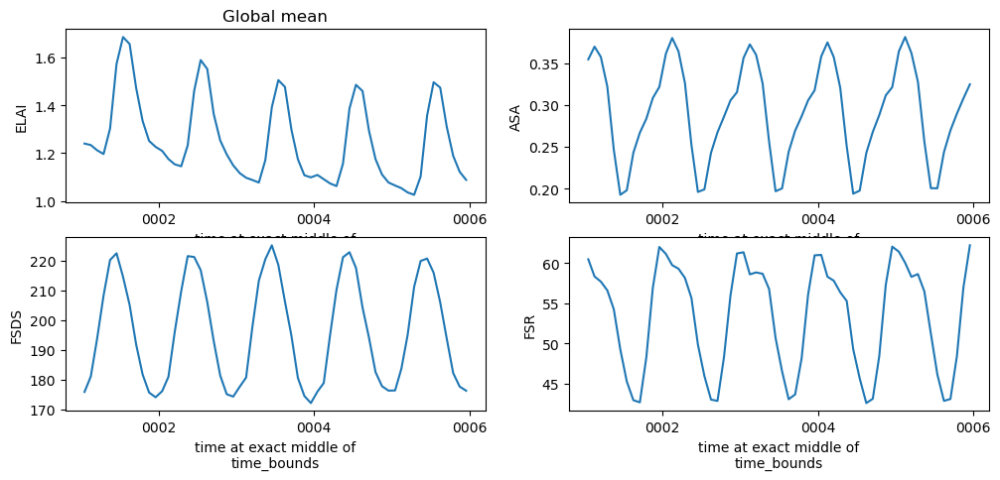
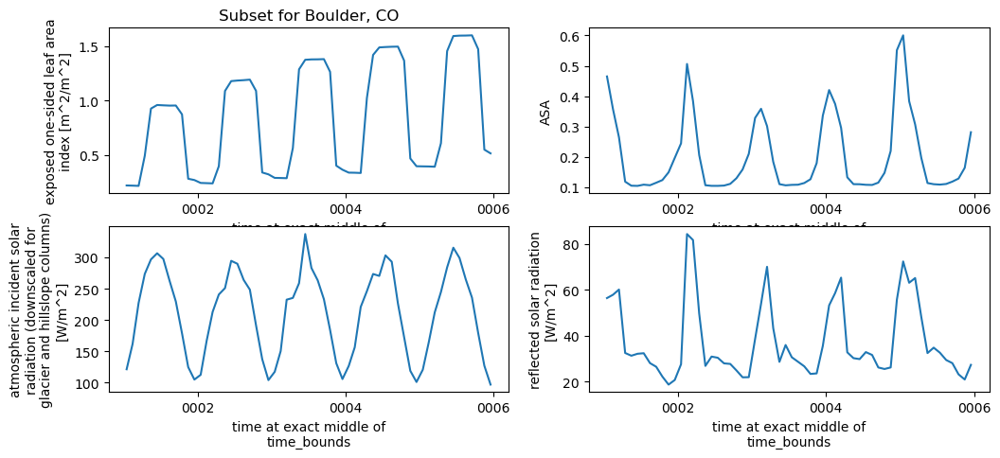
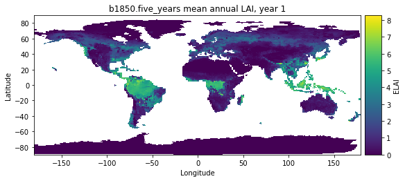

Basic Land Model Plotting#
BEFORE BEGINNING THIS EXERCISE - Check that your kernel (upper right corner, above) is cupid-analysis. This should be the default kernel, but if it is not, click on that button and select cupid-analysis. Note that if you do not have cupid-analysis as an option in your environment list, go to the diagnostics/cupid.ipynb notebook, and run the first two cells.
This activity was developed primarily by Will Wieder.
Global Visualizations#
These are examples of typical variables and plots that we look at in land model diagnostics. You can see examples of land model output from CESM3 development runs here. These plots were generated by the python-based land diagnostic framework (LDF), which was shameless built on work from the atmosphere diagnostics framework (ADF). You can also see the sample plots from the older, ncl-based land model dagnostics package here. More information on CUPiD: CESM Unified Postprocessing and Diagnostics is here: CUPID.
Notebook Objectives#
Become familiar with Jupyter Notebooks
Begin getting acquainted with python packages and their utilities
Plot a map and timeseries of global results
History files from CESM are saved in netcdf format (denoted with the .nc file extension), a file format commonly used for storing large, multi-dimensional scientific variables.
Netcdf files are platform independent and self-describing; each file includes metadata that describes the data, including: variables, dimensions, and attributes.
We’ll start by loading some packages
The first step is to import the libraries needed to plot the data. Here we will use uxarray as a tool to read the netCDF file and plot results. Uxarray is like xarray, but it operates directly on unstructured data, like results from the SE dycore used in CESM3.
# python packages
import os,sys
from glob import glob
from os.path import join
import numpy as np
import pandas as pd
import xarray as xr
import uxarray as ux
from netCDF4 import num2date
# some resources for plotting
import matplotlib as mpl
import matplotlib.pyplot as plt
import matplotlib.path as mpath
import cartopy
import cartopy.crs as ccrs
import cartopy.feature as cfeature
# And to avoid anoying warnings
import warnings
warnings.filterwarnings('ignore')
print(ux.__version__)
# Working with ux version 2025.6.0
%matplotlib inline
NOTE: This example largely uses features of uxarray and matplotlib packages. We won’t go into the basics of python or features included in these packages, but there are lots of resources to help get you started. Some of these are listed below.
NCAR python tutorial, which introduces python, the conda package manager, and more on github.
NCAR ESDS tutorial series, features several recorded tutorials on a wide variety of topics.
Uxarray, which is actively being developed
Project Pythia links to lots of great resources!
GeoCAT examples, with some nice plotting examples
1. Reading and formatting data#
Note: the drop-down solutions, below, assume you used b1850.run_length output for plotting for this section
1.1 Point to the data#
The first step is to grab land (CTSM) history files from a provided CESM model run
For this example we will use:
reflected solar radiation (FSR),
incident solar radiation (FSDS), and
exposed leaf area index (ELAI)
# Here we point to the archive directory from a longer B1850 simulation
run_name = "b1850.five_years" # Name of CESM run
monthly_output_path = "/glade/campaign/cesm/tutorial/diagnostics_tutorial_archive/"+run_name+"/lnd/hist/"
# Create path to all files, including unix wild card for all dates
files = []
files.extend(sorted(glob(join(monthly_output_path+run_name+ ".clm2.h0a.*"))))
# List of variables to read into our dataset
load_vars = ['FSDS', 'FSR', 'ELAI', 'landfrac', 'area']
# Define preprocess function to only keep specific variables
def preprocess_vars(ds):
return ds[load_vars]
# uxarray needs to know about the grid file name.
# We'll get this from the mesh file used in our ne30 case
mesh = '/glade/campaign/cesm/cesmdata/inputdata/share/meshes/ne30pg3_ESMFmesh_cdf5_c20211018.nc'
# File IO can a little slow, but we're only reading in 5 years of data
ds = ux.open_mfdataset(mesh, files[0:60], preprocess=preprocess_vars)
NOTE: These are the raw history files that CTSM writes out.
By default, they include grid cell averaged monthly means for different state and flux variables (h0a).
Printing information about the dataset is helpful for understanding your data.#
What dimensions do your data have?
What are the coordinate variables?
What variables are we looking at?
Is there other helpful information, or are there attributes in the dataset we should be aware of?
# Print information about the dataset
ds
You can also print information about the variables in your dataset. The example below prints information about one of the data variables we read in. You can modify this cell to look at some of the other variables in the dataset.
What are the units, long name, and dimensions of your data?
ds.FSDS
1.2 Simple Calculations#
To begin with we’ll look at albedo that’s simulated by the model.
Albedo can be calculated in several different ways, but the calculations use solar radiation terms that are handled within CTSM.
Here we’ll look at ‘all sky albedo’, which is the ratio of reflected to incoming solar radiation (FSR/FSDS). Other intereresting variables might include latent heat flux or gross primary productivity.
We will add this as a new variable in the dataset and add appropriate metadata.
When doing calculations, it is important to avoid dividing by zero. Use the .where function for this purpose
ds['ASA'] = ds.FSR/ds.FSDS.where(ds.FSDS>0)
ds['ASA'].attrs['units'] = 'unitless'
ds['ASA'].attrs['long_name'] = 'All sky albedo'
# Note, attributes aren't being assigned correctly
ds['ASA']
2. Plotting#
2.1 Easy plots using Uxarray#
To get a first look at the data, we can plot a month of data from the simulation, selecting the month using the .isel function.
We will plot exposed leaf area index (variable =
ELAI). Note that we select the variable by specifying our dataset,ds, and the variable.We also have to deal with time somehow, here we’ll just plot the max value
More plotting examples are on the Uxarray web site
# For LAI plots we'll make 'dead' grids really stand out
cmap = plt.cm.viridis_r
cmap.set_under(color='deeppink')
cmap = cmap.resampled(7)
levels = [0.1, 1, 2, 3, 4, 5, 6, 7]
domain = [-180, 180, -60, 85]
fig, axes = plt.subplots(nrows=1,ncols=1,
subplot_kw={'projection': ccrs.Robinson()},
figsize=(6,3), constrained_layout=True)
axes.set_global()
axes.set_extent(domain, ccrs.PlateCarree())
raster = ds.ELAI.max('time').to_raster(ax=axes)
img = axes.imshow(
raster, cmap=cmap, origin="lower", extent=axes.get_xlim() + axes.get_ylim()
)
img.set_clim(vmin=levels[0],vmax=levels[-1])
axes.set_title(run_name+' max LAI')
axes.coastlines()
cbar = fig.colorbar(img, ax=axes, fraction=0.03)
Click here for figure

Figure: maximum monthly exposed leaf area index (ELAI)
2.2 Calculating differences#
We can calculate the differences between the maximum and minimum of the
simulation to see how much all sky albedo (ASA) changes throughout the year.
Below we’ll plot the max, min, and difference plots
cmap = plt.cm.viridis
cmap = cmap.resampled(12)
levels = [0, 0.1, 0.2, 0.3, 0.4, 0.5,
0.6, 0.7, 0.8, 0.9, 1]
titles = ['Max Albedo', 'Min Albedo', 'Max-min difference']
domain = [-180, 180, -90, 90]
fig, axes = plt.subplots(nrows=1,ncols=3,
subplot_kw={'projection': ccrs.Robinson()},
figsize=(12,9), constrained_layout=True)
for i in range(3):
axes[i].set_global()
# axes[i].set_extent(domain, ccrs.PlateCarree())
if i == 0: # max
raster = ds.ASA.max('time').to_raster(ax=axes[i])
elif i == 1: # min
raster = ds.ASA.min('time').to_raster(ax=axes[i])
elif i == 2: # difference
raster = (ds.ASA.max('time') - ds.ASA.min('time')).to_raster(ax=axes[i])
img = axes[i].imshow(
raster, cmap=cmap, origin="lower", extent=axes[i].get_xlim() + axes[i].get_ylim()
)
img.set_clim(vmin=levels[0],vmax=levels[-1])
axes[i].set_title(titles[i])
axes[i].coastlines()
cbar = fig.colorbar(img, ax=axes[i], fraction=0.03)
Questions:
How do you think albedo changes at different times of year?
What regions have the largest difference in their max and min albedos
What’s causing these albedo changes in different regions?
Click here for figure

Figure: maximum, minumum and difference in monthly all sky albedo (ASA)
2.3 Calculating Time Series#
As above, the plotting function we use here requires data to be 1D or 2D. Therefore, to plot a time series we either need to average over an area or select a single point.
2.3.1 Global time series#
Calculate weights:
land area
lathat is the product of land fraction (fraction of land area in each grid cell) and the total area of the grid cell (which changes by latitude). Units are the same as area.land weights
weights, the fractional weight that each grid makes to the global total, is calculated as the land area of each grid cell divided by the global sum of the land area.
Use weights to calcualte global sums
# Calculate land area and weights
ds['la'] = (ds.area * ds.landfrac).isel(time=0)
ds['la'] = ds['la'] * 1e6 #converts from land area from km2 to m2
ds['la'].attrs['units'] = 'm^2'
ds['weights'] = ds['la']/(ds['la'].sum())
# Check that weights sum to 1
print("sum land weights")
print(ds['weights'].sum().values)
# quick plot (this is actually really slow) and it messes up plotting later in the notebook
ds['weights'].plot().opts(
cmap="viridis", title="Land Weights"
)
Look:
How is grid area different on the SE grid (above) compared to the FV grid below?
What else do you notice about the plotting from uxarray on the SE grid and xarray on the FV grid?
Click here for to see weights on SE and FV grids
Figure: Weights from SE grid (upper plot) vs. the FV grid (lower plot)


Next, calculate and plot a global weighted sum#
NOTE: You will likely want to calculate global weighted sum for a variety of different variables. For variables that have area-based units (e.g. GPP, gC/m^2/s), you need to use the land area variable when calculating a global sum. Remember to pay attention to the units and apply any necessary conversions! Keep in mind that grid cell area is reported in km^2.
# Calculated global mean using weights
## make sure you pay attention to units!
# Plotting here is easier if we convert to an xarray dataset
global_mean = (ds * ds['weights']).sum('n_face').to_xarray()
plt.figure(figsize=(12,5))
plotVars = ['ELAI','ASA', 'FSDS','FSR']
for i in range(len(plotVars)):
plt.subplot(2,2,(i+1))
global_mean[plotVars[i]].plot()
if i == 0:
plt.title('Global mean '+run_name) ;
Click here for the solution

Figure: Plotting solution for global mean timeseries.
2.3.2 Subset data for a point#
NOTE Subsetting currently only works on data arrays in uxarray
In this setion we’ll:
Define the center point [longitude, latitude] in degrees
Subset the dataaray for the nearest neighbor point
Plot using xarray
# 1. Define the center point [longitude, latitude] in degrees
point_coord = [-105.27, 40.01] # Boulder, CO example
plt.figure(figsize=(12,5))
plotVars = ['ELAI','ASA', 'FSDS','FSR']
for i in range(len(plotVars)):
subset_ds = ds[plotVars[i]].subset.nearest_neighbor(
center_coord=point_coord,
k=1, # Number of neighbors to return
element="face centers" # Can also be "nodes" or "edge centers"
)
plt.subplot(2,2,(i+1))
subset_ds.to_xarray().plot()
if i == 0:
plt.title(run_name+' subset for Boulder, CO') ;
else:
plt.title(None)
Click here for the solution

Figure: Plotting solution for single point.
2.4 Calculate an annual weighted mean and create customized plots#
Annual averages require a different kind of weighting: the number of days per month. This example creates python functions that allow you to easily calculate annual averages and create customized plots.
Python functions: In python, creating a function allows us to use the same calculation numerous times instead of writing the same code repeatedly.
2.4.1 Calculate monthly weights#
The below code creates a function weighted_annual_mean to calculate monthly weights. Use this function any time you want to calculate weighted annual means.
# create a function that will calculate an annual mean weighted by days per month
plotVars = ['ELAI','ASA']
def weighted_annual_mean(array):
mon_day = xr.DataArray(np.array([31,28,31,30,31,30,31,31,30,31,30,31]), dims=['month'])
mon_wgt = mon_day/mon_day.sum()
return (array.rolling(time=12, center=False) # rolling
.construct("month") # construct the array
.isel(time=slice(11, None, 12)) # slice so that the first element is [1..12], second is [13..24]
.dot(mon_wgt, dims=["month"]))
# generate annual means
for i in range(len(plotVars)):
temp = weighted_annual_mean(
ds[plotVars[i]].chunk({"time": 12}))
if i ==0:
dsAnn = temp.to_dataset(name=plotVars[i])
else:
dsAnn[plotVars[i]] = temp
# Convert xarray dataset back to uxarray
uxAnn = ux.UxDataset.from_xarray(dsAnn, uxgrid=ds.uxgrid)
# Make a simple plot for the first year of data
plot_year = 0
uxAnn.ELAI.isel(time=plot_year).plot().opts(
cmap="viridis",
title=run_name + " mean annual LAI, year " +
str(uxAnn.time[plot_year].dt.year.values))
Click here for the solution

Figure: Plotting solution.
Extra credit challenge#
If you have extra time & energy, try running through this notebook with other variables. Interesting options could include:
Latent heat flux (the sum of
FCTR+FCEV+FGEV) orGross Primary Production (
GPP)
HINT: pay attention to units for these challenges.